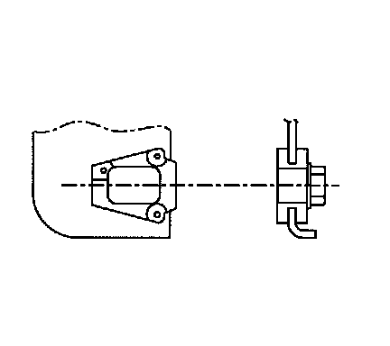
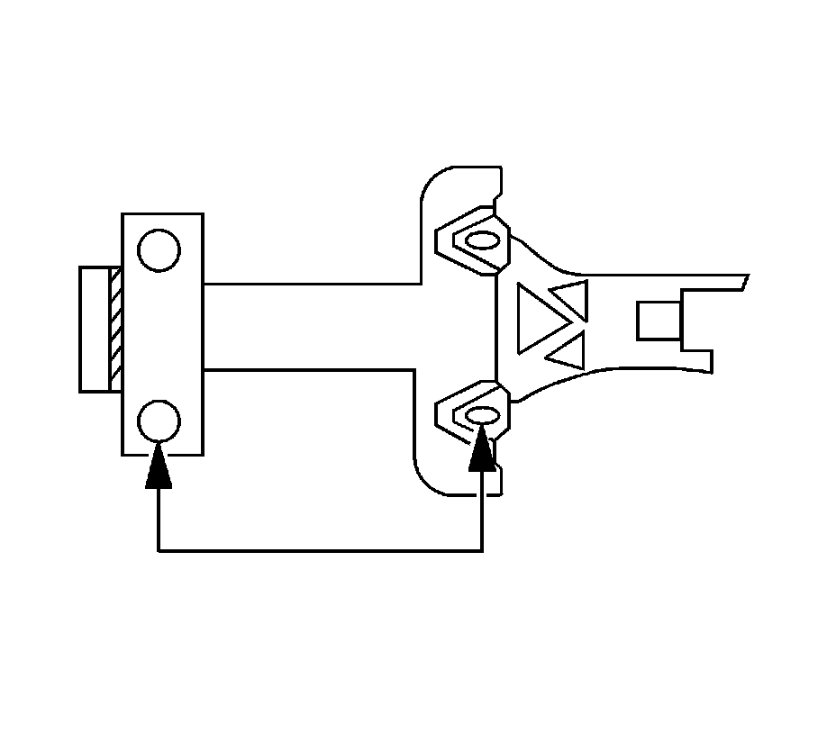
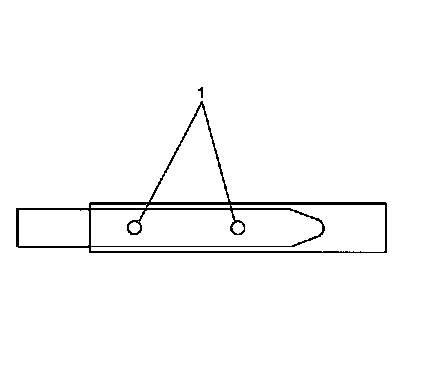

Steering Column
Steering Column Accident Damage Inspection

^ Vehicles involved in accidents which result in the following conditions may also have a damaged or misaligned steering column:
- Frame damage
- Major body or sheet metal damage
- Where the steering column has been impacted
- Where supplemental inflatable restraint systems deployed
^ Inspect the capsules on the steering column bracket assembly. All capsules must be securely seated in the bracket slots and checked for any loose conditions when pushed or pulled by hand. If not, the bracket should be replaced if bolted to the jacket assembly. If the bracket is welded to the jacket assembly replace the jacket assembly.

^ Inspect for jacket assembly collapse by measuring the distance from the lower edge of the upper jacket to a defined point on the lower jacket. Replace the jacket assembly if the measured dimensions are less than 101 mm.

^ Remove the SIR coil from the steering column and allow the coil to hang freely before the shaft is rotated.
^ Visually inspect the steering shaft for sheared injected plastic (1). If the steering shaft shows sheared plastic, replace the steering shaft.
^ Inspect the steering shaft runout for any frame damage that could cause a bent steering shaft. Using a dial indicator at the lower end of the steering shaft, rotate the steering wheel. The runout must not exceed 1.60 mm (0.0625 in).